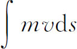
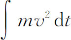
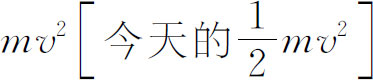
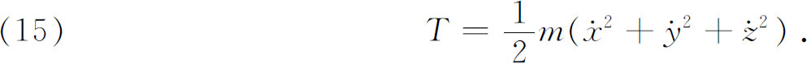
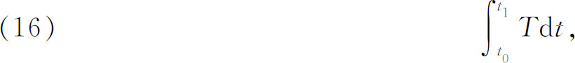
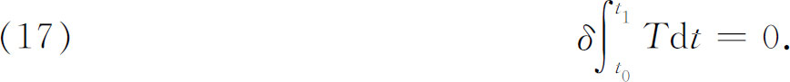
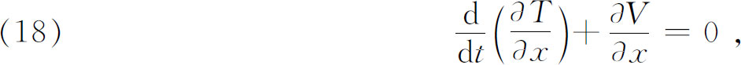
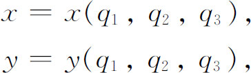
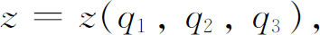
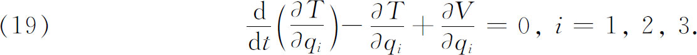

5．拉格朗日和最小作用
拉格朗日把变分法用到了动力学上。他从欧拉那里接过最小作用原理，成了第一个用具体形式把这个原理表示出来的人，这种具体形式就是对于单个质点而言，质量、速度和两个固定点之间的距离的乘积的积分是一个极大值或极小值的原理；即对于这个质点所取的实际路径而言，

必须是极大或者极小。换句话说，因为ds＝vdt，那么
必须是极大或极小。量
叫做动能；在拉格朗日时代叫做活力。拉格朗日还断言，对于质点组而言这个原理也是正确的，甚至对广义质量也是对的，虽然他对于广义质量的情形并不清楚。利用最小作用原理和变分法的方法，拉格朗日得到了他的著名的运动方程。我们来考虑动能是x，y和z的函数的情形。于是对于单个质点，动能T是

拉格朗日还假定使物体运动的作用力都可从一个依赖于x，y和z的势函数V推导出来。于是附加的一个条件是T＋V＝const．，即总能量是不变的。拉格朗日的作用是

他的最小作用原理说的是，这个作用必须是一个极小值或极大值，也就是

在一个极小化或极大化的作用中，即使运动是在空间的两个固定点间和两个确定的时刻t0和t1之间发生，空间和时间变量也一定是变化的。
把变分法的方法用到作用积分上，拉格朗日导出了与欧拉方程（2）类似的方程，即

以及关于y和x的两个相应的方程，这些方程都等价于牛顿第二运动定律。
拉格朗日进一步引进了现在所谓的广义坐标。就是说，可以用极坐标或者用实际上为了确定质点（或广义质量）位置所必需的任何坐标组q1，q2，q3来代替直角坐标。于是


其中qi都是t的函数。用新的坐标来表示，T就成为qi和qi的函数，而V成为qi的函数，于是方程（18）变成

这是关于qi的三个二阶常微分方程的联立方程组。它们都是作用积分的欧拉（特征）方程。如果确定运动物体的位置需用n个坐标，例如两个质点需用6个坐标，那么方程组（19）就有n个方程(26)。
这些广义坐标不一定要有几何或物理意义。今天这些坐标都看作是构形空间的坐标，从而qi（t）就是构形空间中一条路径的方程。因此拉格朗日已经认识到变分原理，即作用必须是极小或极大的原理，可以使用任何坐标组，而且认识到相对于任何坐标变换，拉格朗日运动方程（19）的形式是不变的。
虽然拉格朗日原理相当于牛顿第二运动定律，但是拉格朗日原理比牛顿第二运动定律的陈述有几个优点。首先，任何一种方便的坐标系，都可以说已被纳入拉格朗日原理的结构中。第二，处理有约束的运动问题更容易了。第三，代替一系列分立的微分方程（当系统包含很多质点时，这种方程可以有很多个）现在有了，至少是开始有了一个原理，由它可以求得微分方程。最后一点，虽然拉格朗日原理要假定问题的动能和势能的情况，但并不需要知道作用力。拉格朗日用他的原理推出了力学的主要定律，并解决了一些新的问题，尽管这些还不足以包括力学所涉及的所有问题。拉格朗日关于作用原理的工作在他的《分析力学》中有充分的阐述。他还开始了从变分原理推出其他物理分支的定律的运动，而这种变分原理应该是最小作用原理的类似物。他本人对广泛的一类流体动力学问题给出了一种变分原理。在研究19世纪的变分法时我们将继续讲述有关这方面的内容。
从数学的观点说来，拉格朗日关于最小作用的工作赋予变分法以重大的价值。特别是拉格朗日曾对被积函数包含一个自变量但有几个应变量及其导数的积分导出了欧拉方程。这是原来变分法问题的一种推广，原来变分问题的积分中只包含一个应变量及其导数。在这种推广中，欧拉方程是qi的二阶常微分方程组。